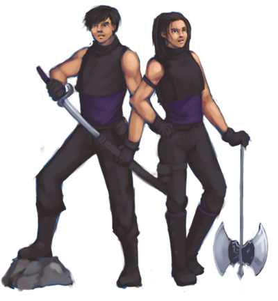

Overview
 Pictured: Alex and Angela, the player characters.
This document describes a game called "Stepstone", which is designed to be a simple, 2D platformer, constructed and documented so that it is easily modifiable. The game will employ sprite-based animation, tiled backgrounds, AI, collision detection and phyics using box2D, and easily modifiable parts to the game using lua.